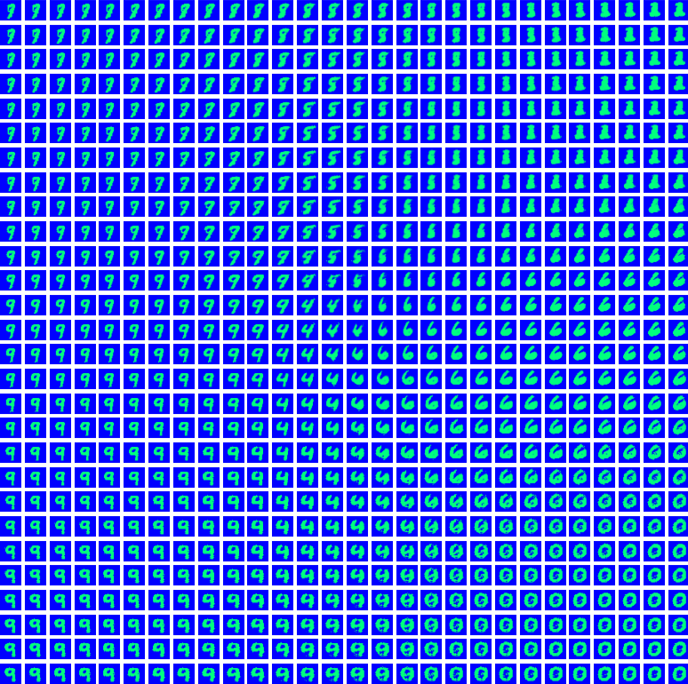
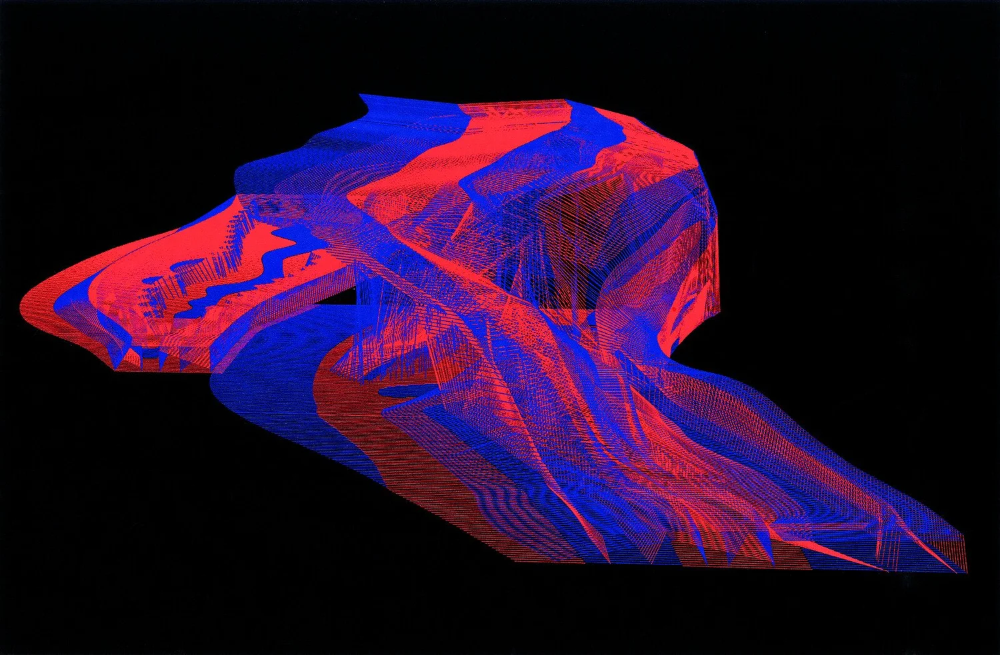
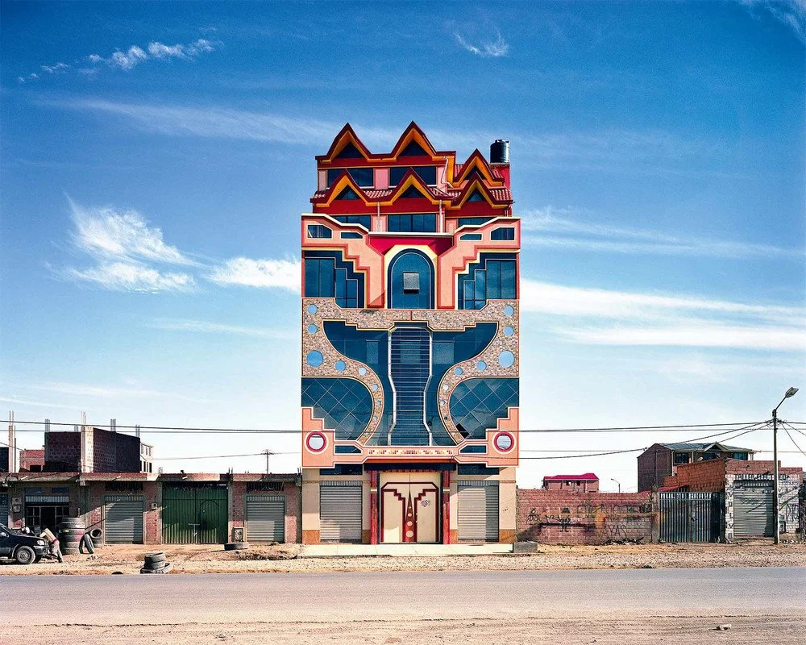
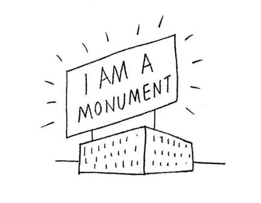

Born and raised in Santa Cruz de la Sierra, Bolivia, José Ignacio Kempff Seleme is an architect with Spanish and European architectural licensure. While getting his BSc in Foundations of Architecture at the Madrid School of Architecture (ETSAM) within the Polytechnic University of Madrid, he complemented his education at the Technical University of Munich. After getting his licensure with an M.Arch at ETSAM, José Ignacio was awarded with a postgraduate degree in BIM from the Polytechnic University of Catalonia. Currently, he is pursuing an MSc in Architectural Computation at the Bartlett School of Architecture (UCL) in London.
José Ignacio explores the boundaries of architecture and urbanism in the American and European context regarding history, theory and practice; identifying and analyzing their interrelationships, with a keen focus on computational methodologies and new digital instruments. He focuses on computation design tools for the built environment at multiple scales, as both method and application. Having worked in architecture studios in Bolivia and Germany and, most recently in Spain, at Ensamble Studio, Ingeser and Quark (Sener Group). José Ignacio collaborates as computational design specialist with Miautics, a team of experts in the creation of digital instruments for the generation, research, simulation and representation of design, architecture and urbanism. At Miautics, he mentors M.Arch students in their design projects applying the right workflows, effective communication and advanced modeling instructions.



José I. Kempff Seleme
joseignacio@kempffsele.me
UK: (+44) 7446524068 · ES: (+34) 610 94 25 14
Nationalities: Bolivia / Germany · Spanish driver's license: B
UK: (+44) 7446524068 · ES: (+34) 610 94 25 14
Nationalities: Bolivia / Germany · Spanish driver's license: B
Licensed architect (Spain, EU) with a strong focus on computational design, building technology, and graphic communication. Trained in advanced computational workflows for the built environment across multiple scales, from parametric modelling to programming, including machine learning and LLM-based solutions. Strong interest in construction innovation, from BIM to Design for Manufacturing and Assembly (DfMA). Comfortable in fast-paced work environments, with a high level of self-motivation, curiosity, and initiative. Committed to education and knowledge sharing.
Experience
Miautics
Madrid, Spain
Computational Design Specialist – freelance
Dec 2023 – Present
- Mentored +25 M.Arch students and professionals in their design projects
- Worked in different design stages, from concept to detailing, applying workflows to meet clients' objectives with effective communication and advanced modeling assignments
- Contributed to the educational platform for the generation, production and representation of architectural projects while investigating how the computational approach should be introduced to students through instrumental methodologies
Sener / Quark
Madrid, Spain
Structural BIM Architect – full-time
Feb 2025 – Sep 2025
- Developed national and international data centre projects within multidisciplinary teams, working across RIBA stages 2, 3, and 4 using BIM-based workflows
- Coordinated and managed structural BIM models through the Autodesk Construction Cloud (ACC)
- Consolidated and optimised established internal BIM workflows, while proposing and developing new workflow initiatives
- Supported structural and mechanical calculations, translating analytical outputs into coordinated BIM models applying Spanish and European structural regulations (CTE)
Ingeser
Madrid, Spain
BIM Architect – full-time
Feb 2024 – Oct 2024
- Coordinated and developed national and international buildings for offices, industrial plants and logistics within the BIM scheme using Revit and the Autodesk suite
- Reviewed third party BIM and IFC models for quality control and coordination
- Collaborated alongside the Engineering Department from schematic to detail design, plus construction documents and building permits
- Applied expertise of Spanish and European accessibility, fire safety, structural security and urban regulations
Ensamble Studio
Madrid, Spain
Architectural Intern
Oct 2023 – Dec 2023
- Trained in on-site construction with the construction of the studio's extension building
- Managed the building team applying lean principles, minimizing time and effort by 32%
- Assisted in different projects while being introduced to BIM collaboration
Redecon
Stuttgart, Germany
Architectural Designer – freelance
Jan 2021 – May 2021
- Developed the detail design and construction documentation for a new rehabilitation building
- Met strict deadlines according to the building and administrative schedule during execution phase
Aparicio Arquitectura
Santa Cruz de la Sierra, Bolivia
Architectural Intern
Sep 2020 – Feb 2021
Sommet & Asociados
Santa Cruz de la Sierra, Bolivia
Design Assistant – internship
Summer 2018
Education
University College London – The Bartlett School of Architecture
London, UK
MSc in Architectural Computation
2025 – 2026
Universitat Politècnica de Catalunya
Barcelona, Spain
Postgraduate in BIM for Modeling, Calculation and Simulation
2024
Universidad Politécnica de Madrid – ETSAM
Madrid, Spain
Master of Architecture
2022 – 2023
- Thesis: “SÚPER M.A.N. – Un nuevo paradigma de museo arqueológico”
Universidad Politécnica de Madrid – ETSAM
Madrid, Spain
BSc in Foundations of Architecture
2015 – 2022
- Thesis: “La arquitectura y su contexto gráfico: Procesos de digitalización”
Technische Universität München
Munich, Germany
Erasmus+ Exchange Programme
2020 – 2021
Deutsche Schule Santa Cruz
Santa Cruz de la Sierra
International Baccalaureate Diploma / High School Diploma
2002 – 2014
Languages
- Spanish (Native)
- English (C1)
- German (B2)
Tools & Programming
Computational Design
- Rhinoceros, Grasshopper
- Visual Studio Code, GitHub
BIM & Digital Construction
- Revit, Dynamo, AutoCAD
- Autodesk Construction Cloud
Structural & Environmental Analysis
- Karamba, IDEA StatiCa, Robot Structural Analysis
- Ladybug, Kangaroo
- CYPE, CYPECAD
AI & Automation
- LLMs (Gemini, ChatGPT, Claude)
- ComfyUI
Visualization & Media
- Blender, Twinmotion, D5 Render, Enscape, Lumion
- Adobe Creative Cloud (Ps, Ai, Id, Ae, Pr)
GIS & Data
- QGIS, ArcGIS
Programming
- C#, Python, RhinoScriptSyntax
Recognitions
- “With Honours” course on Soil Mechanics at ETSAM and highest achievements in three courses at TUM
- Exhibition of Final Bachelor Project in Matadero (Madrid), as part of the ETSAM Show, 2022
- Second best student (salutatorian) of the class of 2014 in the German School
- Rotary Club Prize for best student in High School, 2014
Extracurriculars
- Lead Representative of the Bartlett School of Architecture, UCL (2025–2026)
- Student Representative of the MSc Architectural Computation at UCL (2025–2026)
- Multiple times elected as class delegate at ETSAM (2016–2022)
- Erasmus Buddy for incoming international students at ETSAM (2022)
- Student representative of the ETSAM's Council (2018)
- Model-UN delegate, awarded with the excellence prize award (2012–2014)
- Volunteer work (200h) for various NGOs in Bolivia (2012–2013)
References
Martha Tsigkari · m.tsigkari@ucl.ac.uk
Javier Francisco Raposo Grau · javierfrancisco.raposo@upm.es
Víctor Navarro Ríos · victor@langarita-navarro.com
Sergio del Castello Tello · miautics@miautics.com
Antón García-Abril · anton@ensamble.com
Javier Francisco Raposo Grau · javierfrancisco.raposo@upm.es
Víctor Navarro Ríos · victor@langarita-navarro.com
Sergio del Castello Tello · miautics@miautics.com
Antón García-Abril · anton@ensamble.com
name